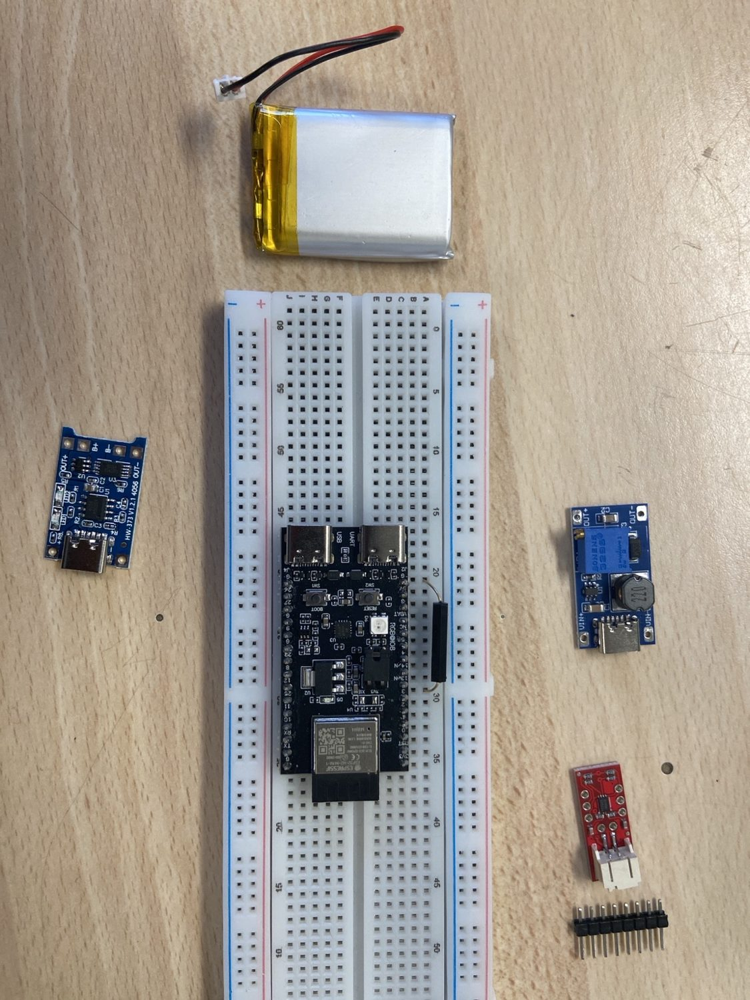

Hestia — Capteur de porte connecté
Objectif
Réaliser et valider un prototype connecté capable de détecter un état magnétique près d’une porte et de l’afficher dans une interface domotique. La chaîne de mesure et de communication fonctionne, mais le dispositif ne certifie pas le verrouillage mécanique réel.Architecture
- ESP32-H2 DevKitM-1 : lecture du reed switch sur GPIO3 et témoin LED.
- Zigbee : communication avec Home Assistant hébergé sur Raspberry Pi 3 Model B et dongle Sonoff.
- Home Assistant / ZHA : affichage de l’état via une entité template.
- Alimentation : batterie LiPo 1S, module de charge TP/TC4056 et convertisseur MT3608.
- CAO : première étude d’intégration du boîtier.
Réalisation et validation
Notre équipe a adapté un exemple ZigbeeHA_on_off_light de l’environnement ESP-IDF. La détection, la LED, l’appairage Zigbee et l’affichage dans Home Assistant ont été validés. Un problème de chute de tension a été résolu en remplaçant le module de charge.Limites et perspectives
Le reed switch signale la proximité de l’aimant, pas l’engagement mécanique du pêne. Les améliorations envisagées concernent la détection, l’autonomie, la mesure de batterie, un profil Zigbee adapté et le boîtier.Équipe et sources
Auteurs : Soheyb Mebarbeche et Nicolas Ogliastri Alfonso. Source principale : rapport de projet Hestia — Capteur de porte connecté (Polytech Lyon, 4A SIR), et documentation ESP-IDF, Zigbee et Home Assistant. Aucun encadrant n’est ajouté sur cette page.
Présentation d’un projet réalisé dans un cadre universitaire, associatif ou de recherche. Contributions et sources créditées.